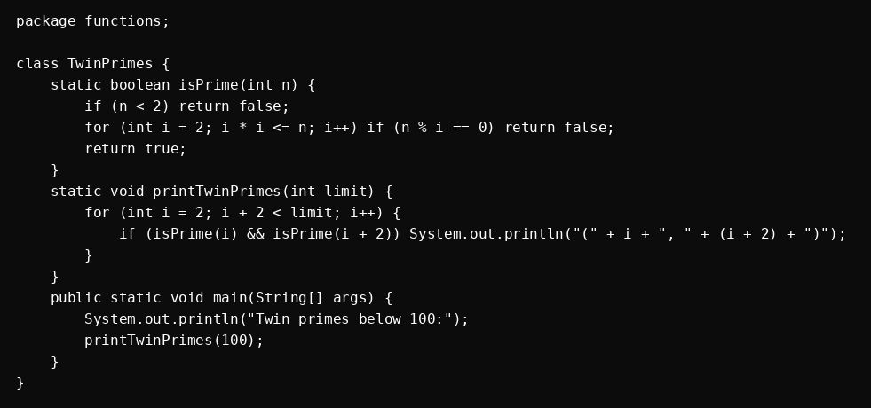
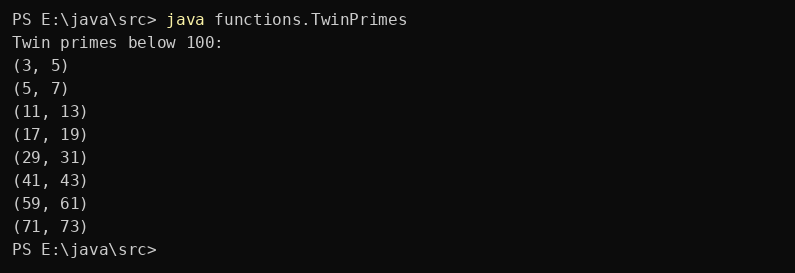

Question 9
Write a Java method to find all twin prime numbers less than 100.
Program

Program screenshot not found.
Output

No output screenshot added yet.
Write a Java method to find all twin prime numbers less than 100.

Program screenshot not found.

No output screenshot added yet.